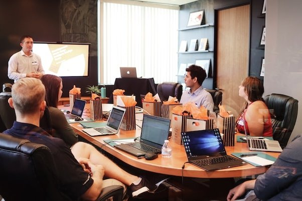

Research
Greetings from the department's research page. Our department's goal is to make significant contributions to computer science by conducting innovative research in multiple domains. Our researchers and academic members are constantly expanding the frontiers of knowledge and creativity.
 RESEARCH AREAS
RESEARCH AREAS1. Intelligence and Machine Learning.
Discover our contributions to the fascinating domains of machine learning and artificial intelligence. Our scientists work on creating intelligent models, algorithms, and systems that improve decision-making and human-computer interaction.
2. Cybersecurity.
Learn about the most recent developments in cybersecurity science. Our group is committed to solving the ever-changing problems associated with protecting digital infrastructure and data. Our study attempts to develop strong solutions for a safe digital future, ranging from network security to cryptography.
3. Soft engineering
Explore the field of research on software engineering. Enhancing software development methods, software quality, and software reliability is the focus of our academic members' work. Find out about our initiatives that help develop software that is effective, scalable, and maintainable.
4. Data science and Big data.
Examine the relationship between data science and computer science. In addition to creating data-driven models and making significant contributions to the field of big data analytics, our researchers are actively engaged in the extraction of relevant insights from enormous datasets.

Publications.
Explore our latest publications, including conference papers, journal articles, and book chapters. Our researchers actively contribute to leading conferences and journals in the field, disseminating valuable knowledge and insights.
[Link to Publications Page]Join Us
Interested in being part of our vibrant research community? Explore opportunities for graduate studies, research positions, and collaboration. Join us in pushing the boundaries of computer science and shaping the future.
Click here to be part of our research team.